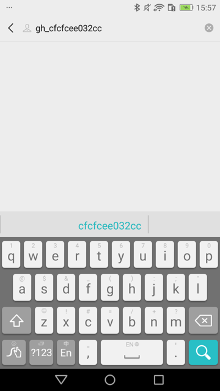

点击元素
找到元素后，往往涉及到点击元素。
举例：点击搜索按钮
此处，对于安卓手机，华为畅享6S DIG-AL00，当前微信的公众号搜索界面中，已经处于系统自带输入法：华为Skype输入法时

用对应代码：
self.driver.send_action("search")
可以实现点击对应的 蓝色搜索🔍按钮，触发搜索，进入搜索结果页面。
详见：
【已解决】uiautomator2中点击华为手机中系统自带Swype的输入法中的搜索按钮
点击元素（带等待时间）
def wait_element_click_Android(self, locator,wait=0.1):
foundAndClicked = False
if isinstance(locator,list):
self.tap(locator)
foundAndClicked = True
elif isinstance(locator,dict):
locatorType = locator.get("type")
locatorText = locator.get("text")
locatorClass = locator.get("class")
locatorDesc = locator.get("desc")
locatorId = locator.get("id")
locatorInstance = locator.get("instance")
locatorBounds = locator.get("bounds")
foundElement = None
hasClicked = False
if locatorType:
if locatorType == "text":
foundElement = self.driver(text=locatorText)
elif locatorType == "desc":
foundElement = self.driver(description=locatorDesc)
elif locatorType == "id":
foundElement = self.driver(resourceId=locatorId)
elif locatorType == "id+bounds":
foundElement = self.xpathFindElement(curClass=locatorClass, curId=locatorId, curBounds=locatorBounds)
elif locatorType == "id+text":
foundElement = self.driver(resourceId=locatorId,text=locatorText)
elif locatorType == "id+desc":
foundElement = self.driver(resourceId=locatorId,description=locatorDesc)
elif locatorType == "class+instance":
# foundElement = self.driver(className=locator["class"], instance=locatorInstance)
instanceInt = int(locatorInstance)
# foundElement = self.driver(className=locatorClass, instance=instanceInt)
foundElementList = self.driver(className=locatorClass)
if foundElementList:
curIdx = instanceInt
shouldMaxNumber = curIdx + 1
if foundElementList.count >= shouldMaxNumber:
foundElement = foundElementList[curIdx]
if not foundElement:
if locatorText:
foundElement = self.driver(className=locatorClass, text=locatorText)
if not foundElement:
if locatorBounds:
# # method 1: click center point
# centerPoint = self.boundsToCenterPoint(locatorBounds)
# self.tap(centerPoint)
# hasClicked = True
# method 2: find by xpath with bounds
foundElement = self.xpathFindElement(curClass=locatorClass, curId=locatorId, curBounds=locatorBounds)
elif locatorType == "point":
centerPoint = self.boundsToCenterPoint(locatorBounds)
self.tap(centerPoint)
hasClicked = True
foundAndClicked = True
else:
if locatorText:
foundElement = self.driver(text=locatorText)
elif locatorDesc:
foundElement = self.driver(description=locatorDesc)
elif locatorId is not None:
foundElement = self.driver(resourceId=locatorId)
elif locatorClass and locatorInstance:
foundElement = self.driver(className=locatorClass,instance=locatorInstance)
elif locator.get('wexin_text_matched') is not None:
# TODO 优化微信公众号异常
foundElement = self.driver(textContains=locator["wexin_text_matched"])
logging.debug("hasClicked=%s, foundElement=%s", hasClicked, foundElement)
if not hasClicked:
isFound = False
isClickable = None
hasTimeoutPara = False
if isinstance(foundElement, u2.xpath.XMLElement):
hasTimeoutPara = False
if foundElement:
isFound = True
isClickableStr = foundElement.attrib["clickable"]
isClickableStr = isClickableStr.lower()
if isClickableStr == "true":
isClickable = True
elif isClickableStr == "false":
isClickable = False
# elif isinstance(foundElement, u2.session.UiObject):
elif isinstance(foundElement, u2.UiObject):
hasTimeoutPara = True
if foundElement and foundElement.exists:
isFound = True
if (foundElement.count > 1):
foundElement = foundElement[0]
isClickable = foundElement.info["clickable"]
if isFound:
# # for debug: click clickable=false element still working for old android 6.0
# isClickable = True
if isClickable:
if hasTimeoutPara:
foundElement.click(timeout=wait)
else:
foundElement.click()
foundAndClicked = True
else:
logging.info("Try auto find and click clickable=true parent for locator=%s", locator)
logging.debug("clickable=false element info: %s", foundElement.info)
# curClassName = foundElement.info["className"]
# curNodeXpath = None
# if locatorText:
# # most case: android.widget.TextView
# # sometime: android.view.View
# curNodeXpath = "//%s[@text='%s']" % (curClassName, locatorText)
# elif locatorId:
# # {'bounds': '[41,323][1039,727]', 'class': 'android.widget.ImageView', 'id': 'com.ss.android.auto:id/j', 'instance': '10', 'type': 'id'}
# curNodeXpath = "//%s[@resource-id='%s']" % (curClassName, locatorId)
curClassname = None
curResId = None
curBoundsStr = None
# curAttrib = foundElement.attrib
# AttributeError: 'UiObject' object has no attribute 'attrib'
if hasattr(foundElement, "attrib"):
curAttrib = foundElement.attrib
# {'index': '0', 'text': '', 'resource-id': 'com.netease.newsreader.activity:id/hs', 'package': 'com.netease.newsreader.activity', 'content-desc': '', 'checkable': 'false', 'checked': 'false', 'clickable': 'false', 'enabled': 'true', 'focusable': 'false', 'focused': 'false', 'scrollable': 'false', 'long-clickable': 'false', 'password': 'false', 'selected': 'true', 'visible-to-user': 'true', 'bounds': '[75,2098][141,2134]'}
curResId = curAttrib["resource-id"]
curBoundsStr = curAttrib["bounds"]
else:
# # for debug
# self.debugPrintElement(foundElement, "no attrib")
logging.debug("")
curInfo = foundElement.info
# {'bounds': {'bottom': 2134, 'left': 75, 'right': 141, 'top': 2098}, 'className': 'android.widget.ImageView', 'contentDescription': '', 'enabled': 'true', 'focusable': 'false', 'focused': 'false', 'longClickable': 'false', 'packageName': 'com.netease.newsrea....activity', 'scrollable': 'false', 'selected': 'true', 'text': ''}
if not curClassname:
curClassname = curInfo["className"] # 'android.widget.ImageView'
if not curBoundsStr:
boundsDict = curInfo["bounds"]
x0 = boundsDict["left"]
y0 = boundsDict["top"]
x1 = boundsDict["right"]
y1 = boundsDict["bottom"]
curBoundsStr = "[%d,%d][%d,%d]" % (x0, y0, x1, y1)
# '[75,2098][141,2134]'
if not curResId:
if "resourceName" in curInfo:
curResId = curInfo["resourceName"] # 'com.netease.newsreader.activity:id/bn5'
curNodeXpath = self.generateElementXpath(
curClass=curClassname,
curId=curResId,
curBounds=curBoundsStr,
)
if curNodeXpath:
# # for debug
# if curResId:
# if re.search("(id/a_9)|(id/bcp)", curResId):
# self.debugPrintElement(foundElement, "debug find parent 3->5?")
# else:
# self.debugPrintElement(foundElement, "empty resource id")
foundAndClicked = self.findAndClickNode(curNodeXpath)
else:
# TODO: add other type later
logging.warning("Not click for click will not work for clickable=false of element: %s, found by locator=%s",
foundElement.info, locator)
else:
logging.warning("Not click for not found element by locator=%s", locator)
time.sleep(wait)
return foundAndClicked
调用：
if self.isAndroid:
foundAndClicked = self.wait_element_click_Android(locator=locator, wait=wait)